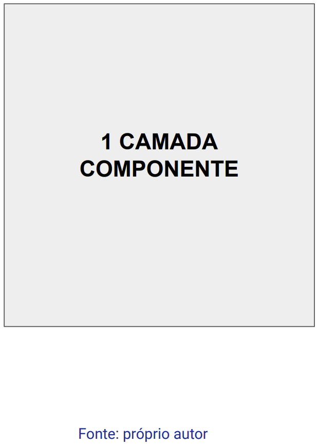
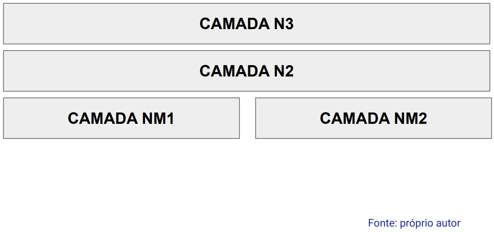
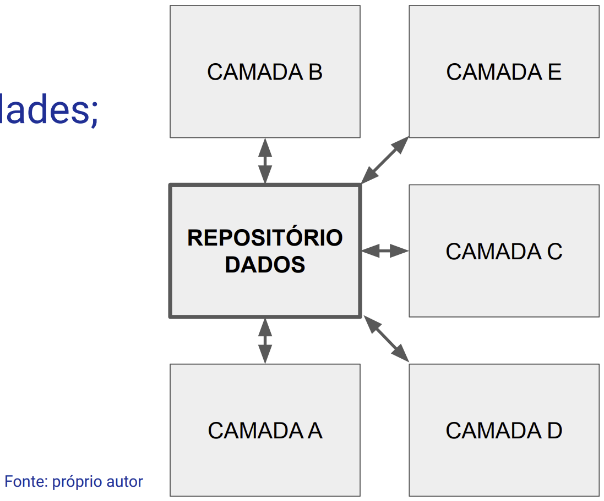
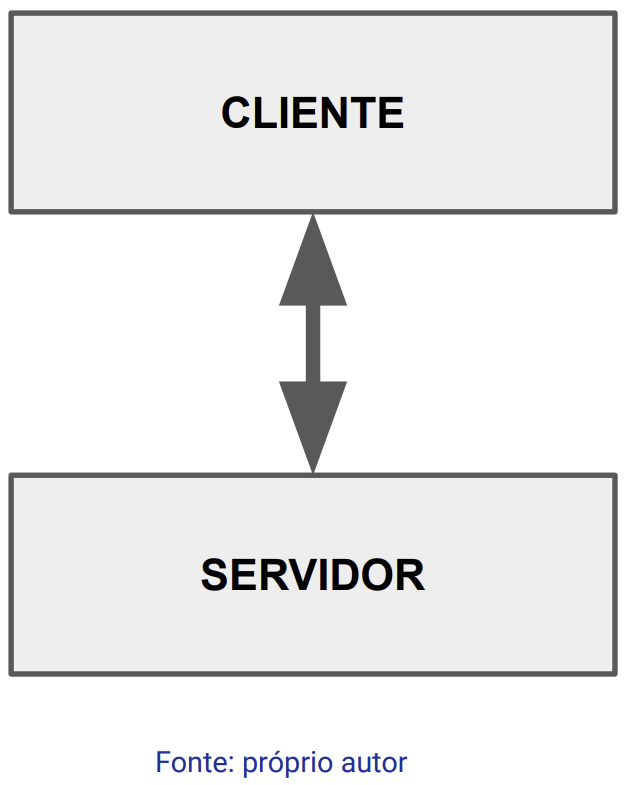
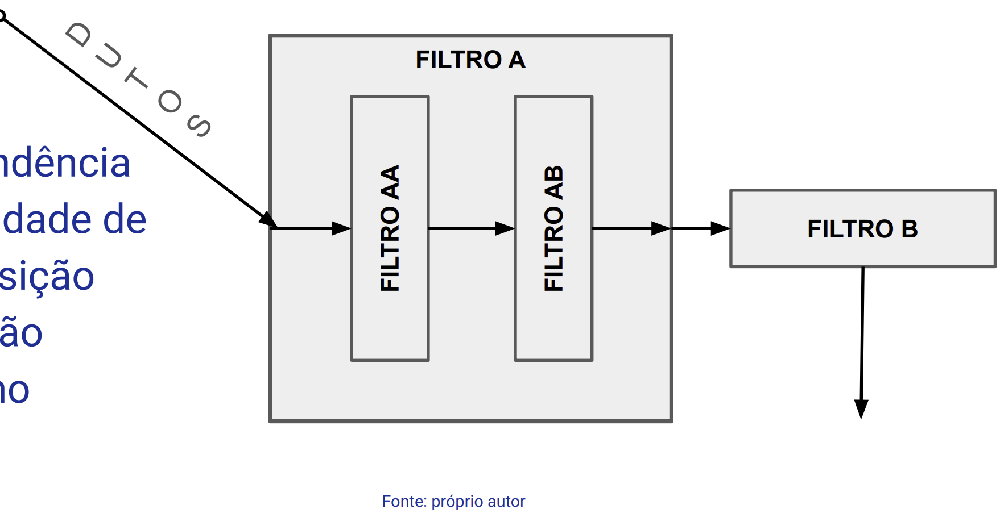
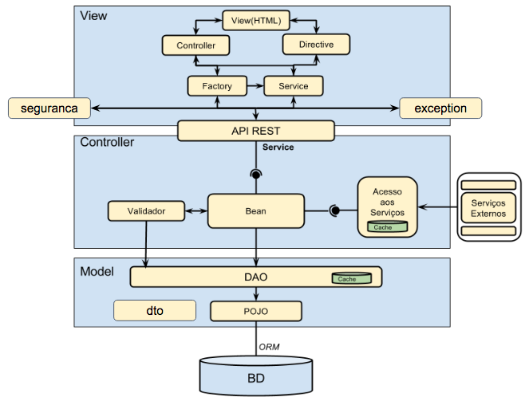
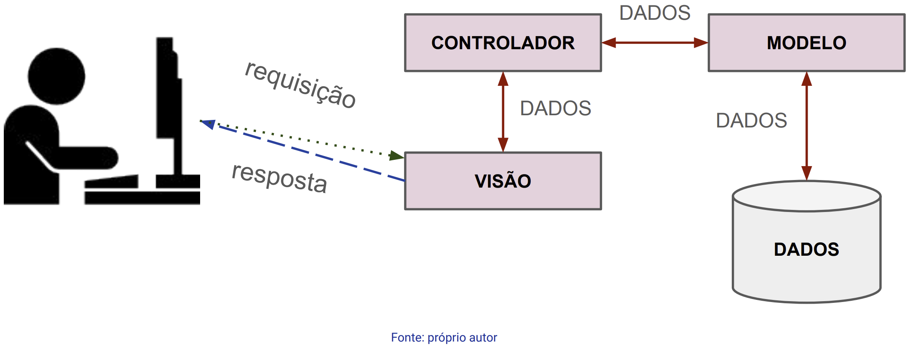
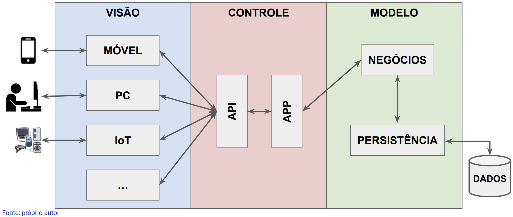

Disciplinas
TÉCNICAS AVANÇADAS DE DESENVOLVIMENTO DE SOFTWARE-T01-2024-2 Concluído
Materiais
Vídeo 1 - [UFMS Digital] Técnicas Avançadas de Desenvolvimento de Software - Módulo 2 - Unidade 2 - Modelo MVC sendProf° ministrante: Luciano Édipo Pereira da Silva
Conteúdo
- Padrões de Arquitetura (física/dev)
- Arquitetura Monolítica
- Arquitetura em camadas
- Arquitetura de repositório
- Arquitetura cliente-servidor
- Arquitetura duto e filtro
- Arquiteturas de Aplicações (lógica/processos)
- Modelo MVC (Model-View-Controller) em Profundidade;
- Desconstrução do padrão MVC: Model, View e Controller em detalhes.
- Desafios comuns e soluções ao trabalhar com o modelo MVC.
- Ferramentas e tecnologias modernas em aplicações MVC.
Arquitetura Monolítica
- Unidade única;
- Acoplamento forte;
- Implantação única;
- Escalonamento vertical.

Arquitetura em camadas
- Hierarquia
- Responsabilidades
- Exemplos

Arquitetura de repositório
- Centralização de dados;
- Separação de responsabilidades;
- Padrões de acesso;
- Consistência e Integridade;
- Segurança;
- Escalabilidade.

Arquitetura cliente-servidor
- Cliente;
- Servidor;
- Comunicação;
- Independência tecnológica;
- Escalabilidade.

Arquitetura duto e filtro (pipeline)
- Dutos;
- Filtros ->
- Independência
- Flexibilidade de Composição
- Manutenção
- Paralelismo

Arquiteturas de Aplicação
- Visão lógico/processos;
- Domínio da aplicação.
- Abstrações:
- Sistemas de Processamento de Transações;
- Compra/Venda, Pagamento…
- Sistemas de Informação:
- Gerenciais, Administrativos, ERP…
- Processamento de Linguagens:
- Compiladores, Consultas, Tradução…
Modelo MVC



- Responsabilidade -> Dados
- Atividades:
- Armazenamento;
- Recuperação;
- Validação;
- Lógica de Negócios.
- Responsabilidade -> Apresentação/Interface
- Atividades:
- Exibição;
- Formatação;
- Interação;
- Responsabilidade -> Processamento
- Atividades:
- Manipulação;
- Atualização.
- Modelo
- Visão
- Processamento e controle;
- Lógica de Negócios?***
- Separação das responsabilidades;
- Reutilização de Código;
- Facilidade de Testagem e Manutenção;
- Dev em Paralelismo;
- Flexibilidade e Extensibilidade;
- Suporte a diferentes UIs;
- Uso em WEB.
- Acoplamento indesejado;
- Gerenciamento do Estado da Aplicação;
- Aumento da Complexidade;
- Compartilhamento excessivo de Lógica entre M e V;
- Atualizações desnecessárias da Visão;
- Manutenção do Roteamento no Controlador.
DEV WEB DEV MÓVEIS DESKTOP
ASP.NET MVC JavaFX Angular
Ruby on Rails Cocoa React Native
Django Xamarin
Spring MVC
Angular JS
React JS
Node.js
Flask
Estudo de caso: TaskHub
Desenvolva um sistema web simples para gerenciamento de tarefas:
- Separe a lógica de manipulação de dados em modelos.
- Separe a lógica de apresentação usando um mecanismo de template, podendo utilizar outros front ends.
- Crie controladores para manipular as ações do usuário e interagir com o modelo.